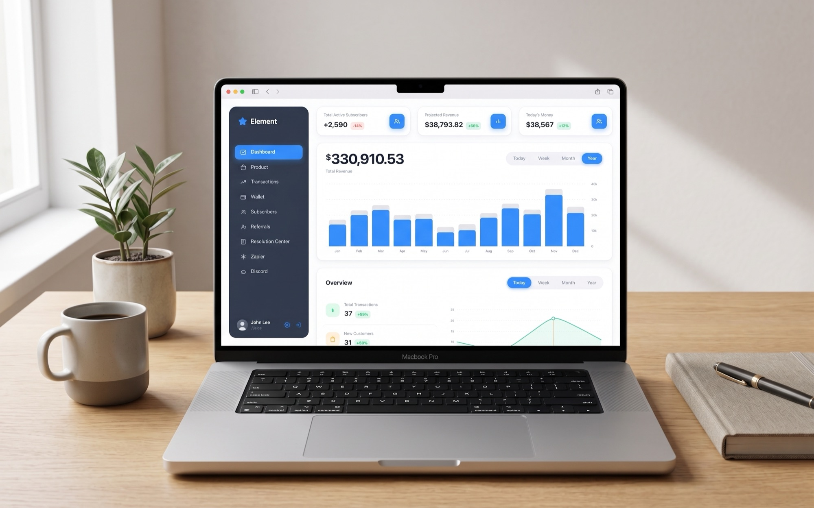
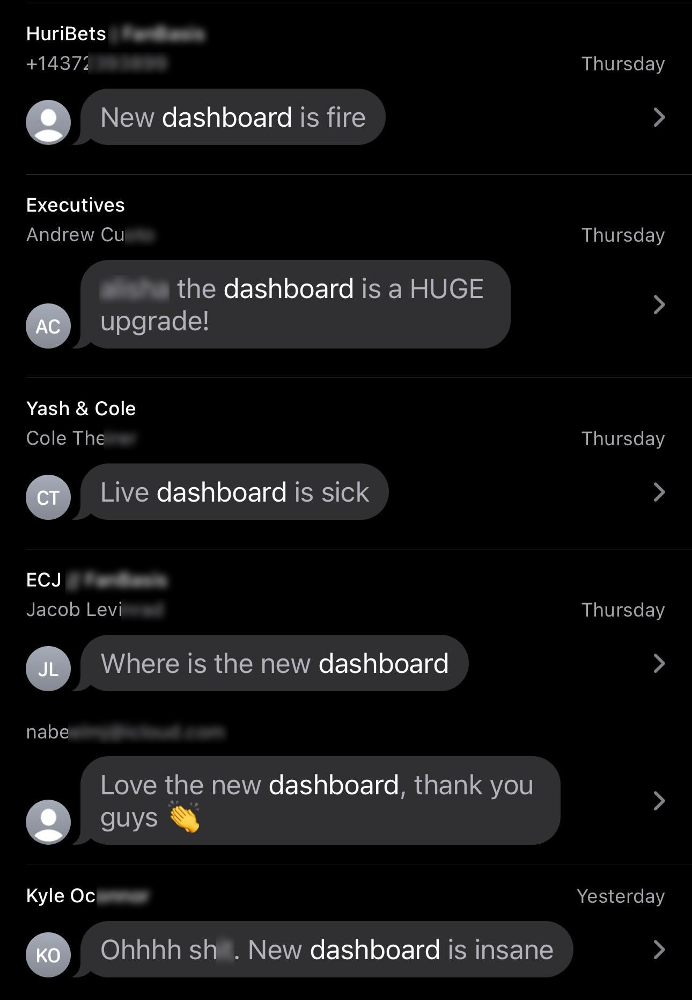
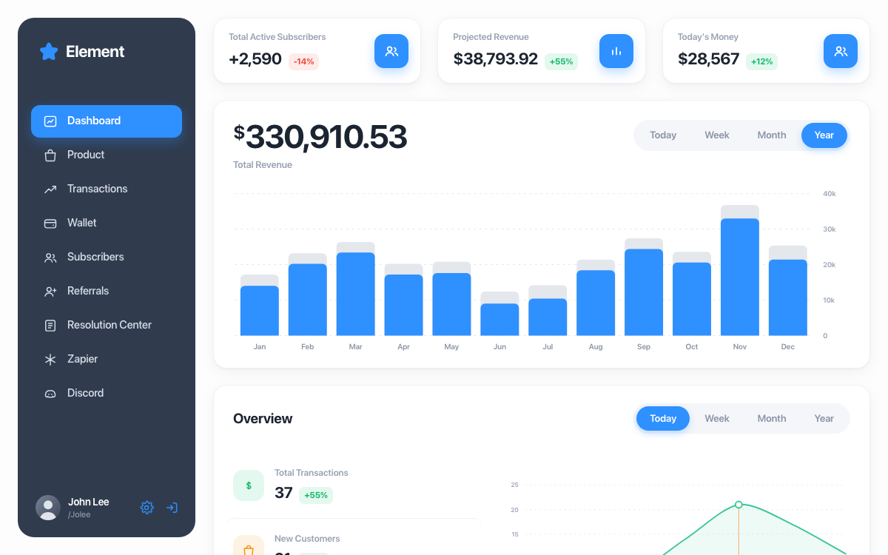
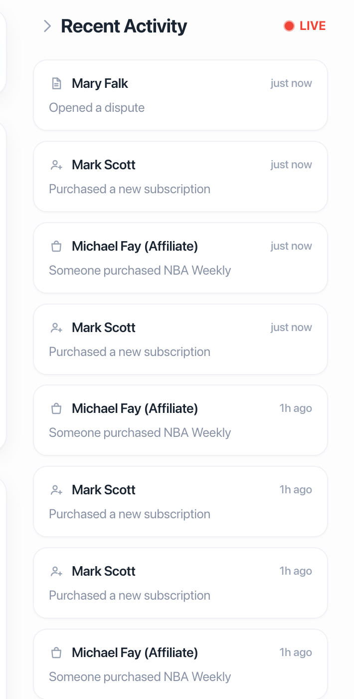
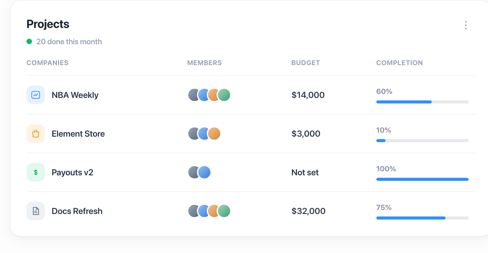
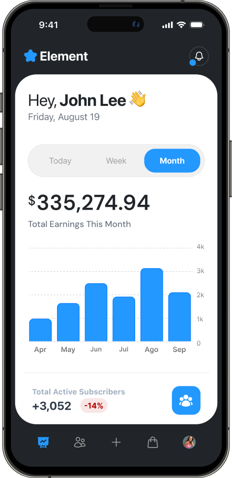

Element Dashboard
A dashboard refresh built around the numbers users actually needed

- Role
- Product Designer
- Scope
- Dashboard redesign
- Timeline
- 2024 to 2025
- Platform
- Responsive web
The problem
Element is a name changed here for confidentiality. The real product had an existing dashboard that badly needed a refresh: the interface was dated, and the numbers that actually drove a user's decisions were buried a few clicks deep instead of front and center. Fixing that, across 2024 and 2025, is what this project set out to do.
The redesign put the numbers that actually drove those decisions front and center, instead of the old layout's flat wall of data. Alongside them, a real time activity monitor was added, so a user could watch sales, disputes, and other activity on the platform as it happened, not dig for it after the fact.
The result
Within the first day of going live, the clients were already calling it a huge upgrade.
The response was immediate, and we received a lot of positive feedback.

Process
- 01
Research
Worked out which numbers actually drove a decision, and which ones just filled space.
- 02
Wireframing
Rebuilt the structure around those numbers, with room for live activity.
- 03
Validation
Put the new layout in front of users before any of it got styled.
- 04
Final UI
Locked the type, color, and chart styling into the screens that shipped.
Walkthrough




Overview
Sidebar navigation, three stat cards that count up on load, and a year of revenue in one chart.
Analytics & activity
Switchable lines, and a live feed of the events moving through the product.
Projects
Budgets, team avatars, and a completion bar for every project in flight.
Mobile
Its own design, not a squeeze, with the period toggle and chart reflowed into one sheet.
See the numbers move
Switch between Today, Week, Month, and Year and watch the chart redraw, hover a row to spotlight its line, or just watch the stat cards count up.
View live prototypeHave a product worth skyrocketing?
I'm open to new opportunities and looking to join a team where I can bring a decade of product design and make a meaningful impact. If you're hiring, I'd love to hear about what you're building.